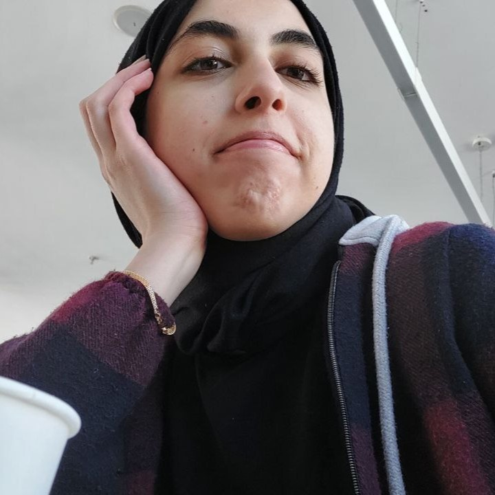

|  | Pazartesi | Salı | Çarşamba | Perşembe | Cuma |
|---|---|---|---|---|---|
| 09:30 - 10:30 | Yazılım Mühendisliği (%30 İngilizce) YAM 216 Grafik Programlama |
Yazılım Mühendisliği (%30 İngilizce) MAT 222 Diferansiyel Denklemler |
Yazılım Mühendisliği (%30 İngilizce) BIM 226 Web Tabanlı Programlama |
||
| 10:30 - 11:30 | Yazılım Mühendisliği (%30 İngilizce) YAM 216 Grafik Programlama |
Yazılım Mühendisliği (%30 İngilizce) MAT 222 Diferansiyel Denklemler |
Yazılım Mühendisliği (%30 İngilizce) BIM 226 Web Tabanlı Programlama |
||
| 11:30 - 12:30 | Yazılım Mühendisliği (%30 İngilizce) YAM 216 Grafik Programlama |
Yazılım Mühendisliği (%30 İngilizce) BIM 226 Web Tabanlı Programlama |
Yazılım Mühendisliği (%30 İngilizce) MAT 222 Diferansiyel Denklemler |
Yazılım Mühendisliği (%30 İngilizce) BIM 222 Algoritma Analizi |
|
| 12:30 - 13:30 | |||||
| 13:30 - 14:30 | Elektrik-Elektronik Mühendisliği (%30 İngilizce) EEM 222 Elektronik I |
Elektrik-Elektronik Mühendisliği (%30 İngilizce) EEM 222 Elektronik I |
İZÜ Seçmeli Dersler IZU 021 Fizik ve Evreni Anlamak |
||
| 14:30 - 15:30 | Elektrik-Elektronik Mühendisliği (%30 İngilizce) EEM 222 Elektronik I |
Yazılım Mühendisliği (%30 İngilizce) BIM 222 Algoritma Analizi |
İZÜ Seçmeli Dersler IZU 021 Fizik ve Evreni Anlamak |
||
| 15:30 - 16:30 | Yazılım Mühendisliği (%30 İngilizce) BIM 222 Algoritma Analizi |
İZÜ Seçmeli Dersler IZU 084 Kariyer Planlama |
|||
| 16:30 - 17:30 | İZÜ Seçmeli Dersler IZU 084 Kariyer Planlama |
||||
| 17:30 - 18:30 | Bilgisayar Mühendisliği MAT 232 Sayısal Yöntemler |
Bilgisayar Mühendisliği MAT 232 Sayısal Yöntemler |
|||
| 18:30 - 19:30 | Bilgisayar Mühendisliği MAT 232 Sayısal Yöntemler |
Bilgisayar Mühendisliği MAT 232 Sayısal Yöntemler |